Рекламно-інформаційне агентство повного циклу — Біла Церква, Фастів, Умань, Сміла, Богуслав (Дибинці), Рокитне — з 2000 року.
Усім привіт! Ми подружжя Яременко - Богдан та Румяна. Ми є власниками самого великого рекламного агентства в Білій Церкві та радіостанції БЛІЦ-ФМ. Працюємо на ринку реклами вже 26 років.
Богдан @yaremenko.bohdan - це мозок компанії і її фінансовий директор,
а Румяна @rumiana.yaremenko - її серце і креативний директор.
Наш БЛІЦ - це не просто бізнес, це наше дітище, ми цим живемо на роботі і вдома, ми намагаємось максимально все зробити, щоб клієнт був задовлений. Кожен клієнт для нас, як член нашої родини.
Приєднуйтесь до нашої БЛІЦ-сім‘ї!
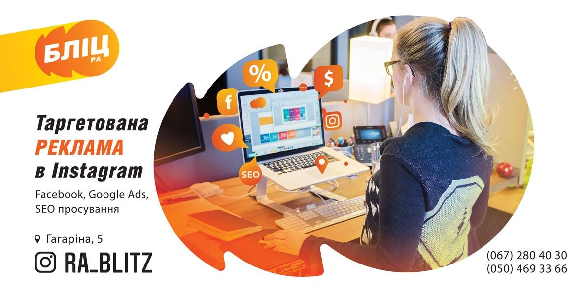
Таргетована реклама в соцмережах та гугл, розробка сайтыв та SEO оптимізація, підготовка текстів та креативів для реклами в інтерент.
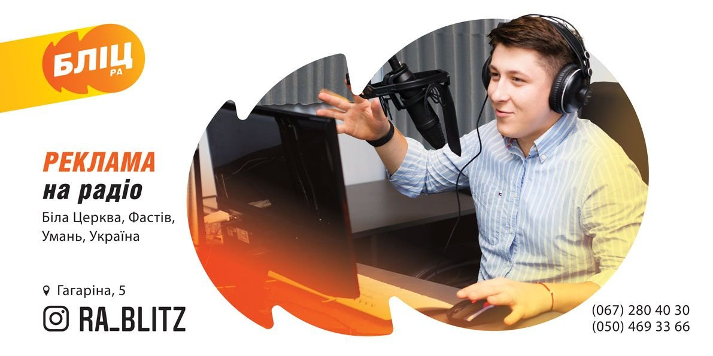
Біла Церква, Фастів, Умань, вся Україна виготовимо радіо ролики і розмістимо на провідних радіостанціях країни
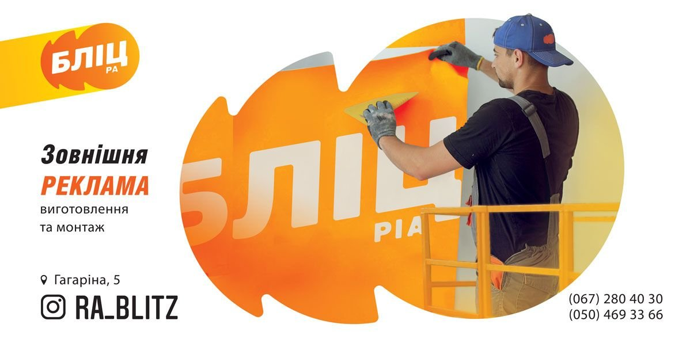
Виготовлення та монтаж вивісок, брендування торгових точок та транспорта, внутрішній дизайн
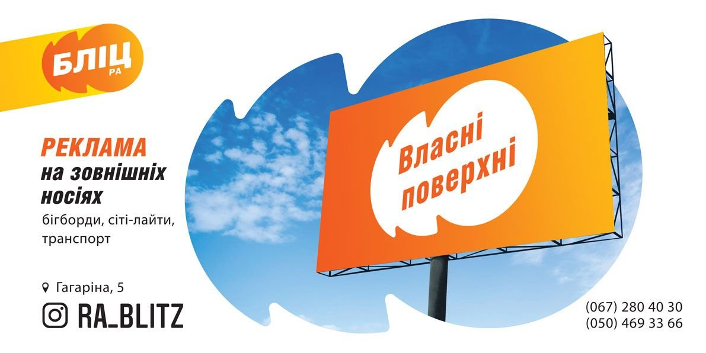
Бігборди, сітілайти, відеоборди, транспорт, ліфти, дошки оголошень, тумби
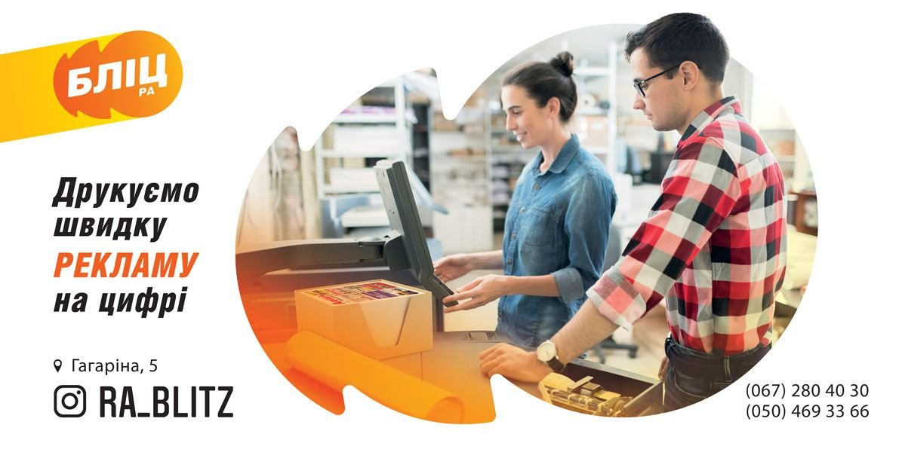
Цифровий, офсетний, шовкотрафаретний, широкоформатний, флексодрук, деколь, УФ-друк, лазерне висікання
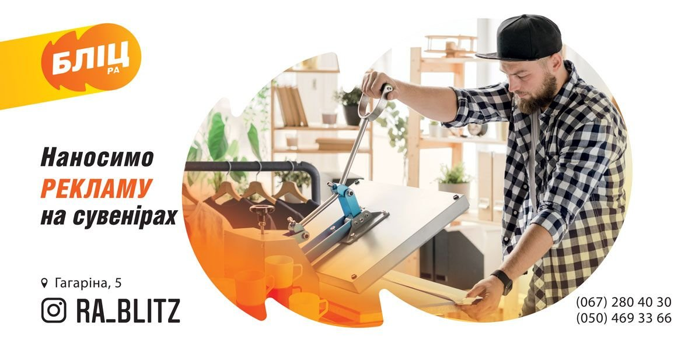
Футболки, чашки, цукор, шоколад, посуд, паперові стаканчики, етикетка, наліпки, флешки, парасолі, ручки, попільнички, щоденники, планінги
Розміщуємо радіорекламу на 8+ станціях: Біла Церква, Фастів, Умань, Сміла, Богуслав (Дибинці), Рокитне.

Радіохвиля 105,7

Радіохвиля 107.6
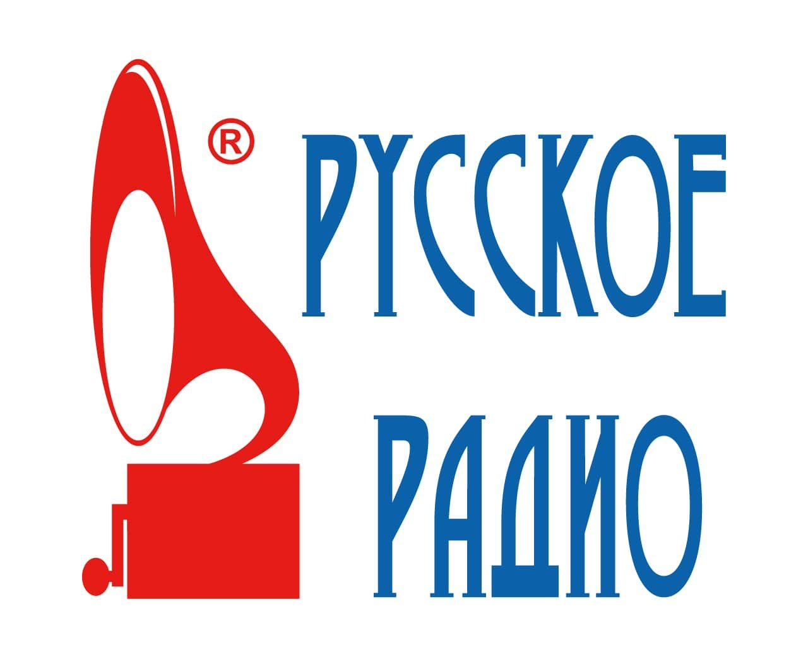
Радіохвиля 102,8
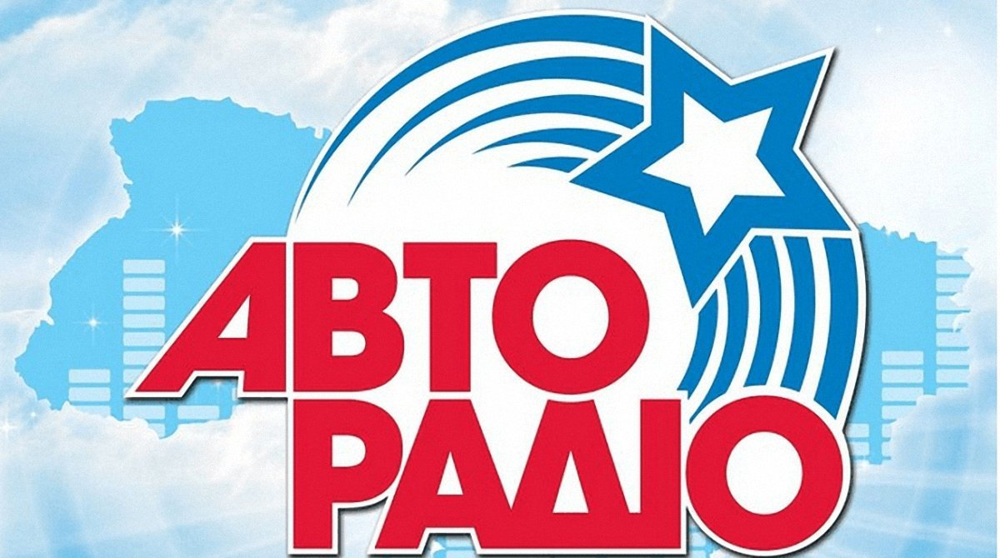
Радіохвиля 102.3

Радіохвиля в Білій Церкві 103,8 та в Умані 105.7 Цільова аудиторія - позитивно налаштовані люди, що володіють амбіціями і енергією; робочі, фахівці, керівники, службовці.
Радіохвиля в Білій Церкві 106.2 та Умань 100.6

Радіохвиля 104.3
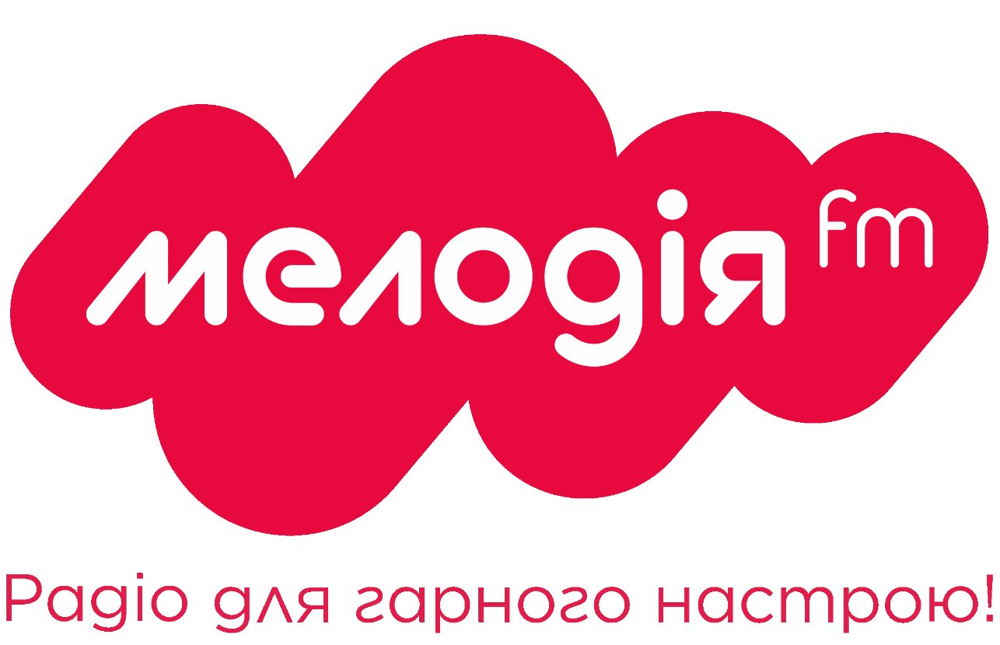
Радіохвиля 105.3
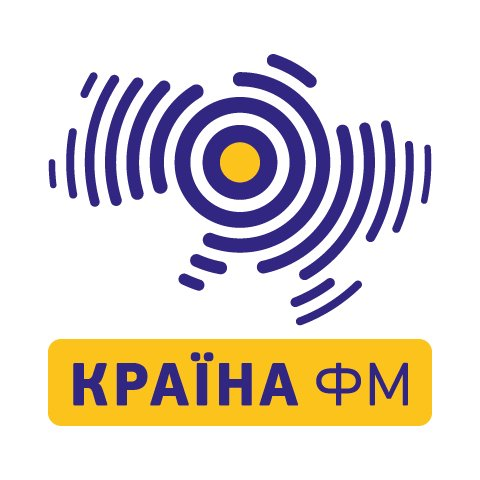
Радіохвиля 107,2

Радіохвиля у Білій Церкві 103.3, Фастів 95.0
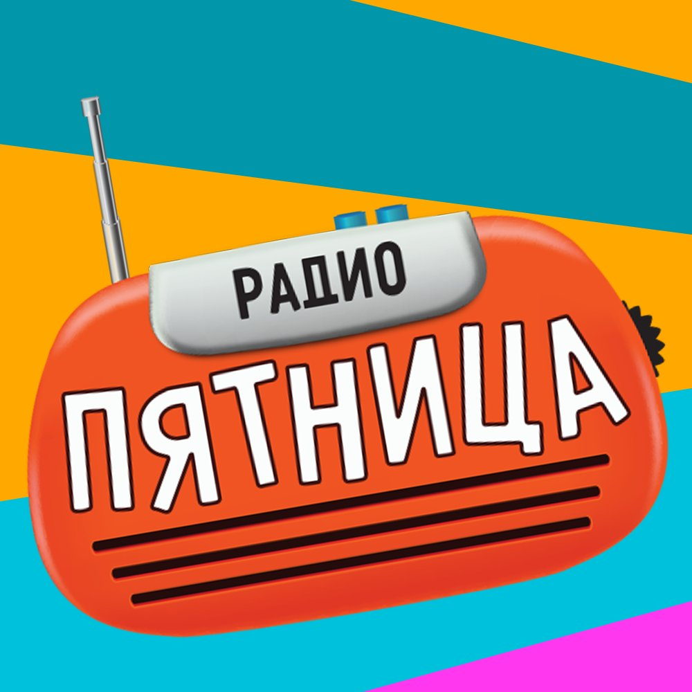
Радіохвиля в Умані 91.5